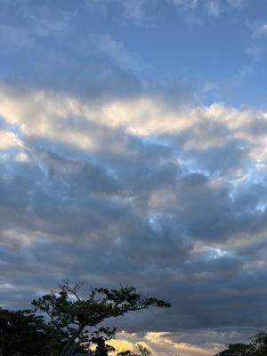

うるがいの話 ある日
最新: 想定外【うるがいの話 ある日】とは 一日だけのプログです
『うるがいの話』の最新一日だけのプログで、通信料が少なく経済的だ。カニの画像をクリックすると全ての日付が載る『うるがいの話』サイトを表示します
|
|
【うるがいの話】 うるがい(ｳﾙｶﾞｲ urugai)とは、『もずくがに』の名前でとても大きくなります。 |
|---|---|
|
|
【カミマヤーの話】 猫のことを方言でマヤーといいます。カミマヤー（kamimayaa）とは、神の猫のことです。 |
|
【たながぁの音楽】 たながぁ（ﾀﾅｶﾞｰ tanagaa）とは手長えびのことで、何種類かあり大きいのは車 エビぐらいになります。 |

|
【ぶながぁの話】 ぶながぁ(ﾌﾞﾅｶﾞｰ bunagaa)とは、赤い髪の毛、赤い身体、そして身長は１ｍ２０ｃｍ ぐらい、川の蟹を食べているの目撃された。場所は沖縄県国頭郡大宜味村のと ある村僕の隣近所に住んでいる爺さんから、聞いた話です。 |
|
|
【ギーマの話】 ギーマ(giima)とは、山原の里山に咲くスズランに似た、 花を付けます。実は食べられます、 気が付くと口の周りが紫になっています。 |
2024年01月12日 (金）想定外
14:34

志賀原発『地震の揺れ一部周期で従来の想定上回る』のニュースをみた時、ま
たかと思った。今回の能登半島の地震は、千年に一度とも言われてるほどの甚
大な災害である。とある会社で、起こりうる災害を想定するとき『沖縄本島が
甚大な災害にあい、本島内の事業所が利用できなくなる』の場合は、事業継続
の対策対象外とした。それをとある省庁の天下りの役員に説明したところ、顔
がみるみるうちに赤くなり頭から湯気が、『ダメ！』と説明に来た担当役員以
下𠮟られる。で、東京の事業所で事業継続できるように小規模な業務が行える
ように、予算確保を含め数年かけて対応した。南海トラフ地震や富士山の噴火
も生きている間に経験するだろうか。その昔は、台湾有事なんて考えられなか
った。
１４時３０分 ビットコインの総資産 ￥１９、４２２（↑５）